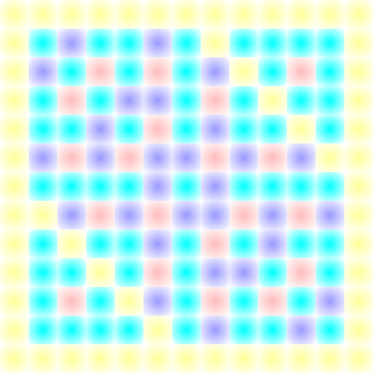

Well, now you're here.
I'm main_gi/Igniam, a critic, game designer and puzzle designer. I also write video-game-inspired original music, having lots of distinct melodies with few repeats, and have created terminology for music concepts that focus on melody and modern electronic inventions. For example, a trime is defined as a 3-note melody. It comes from tri- and the start of melody. Music terms have failed to catch up - there was no existing word for it until now - so I made my own.
My personality and writing style reflects challenging and improving the norms, and no filler content. I didn't write this in third-person or use super long words.
For fun, I mostly play puzzle games and used to play first-person shooters. Anything with any strategy will appeal to me, like CCGs and mysteries.
I have a lot of articles written behind the scenes, but my goal is that most of them will be visual and interactive. It'd be much easier to explain music when you can play and edit my examples. Basically, this site is incomplete and there'll be a huge burst of articles later, I promise.
Here's some of my work, though honestly only a few because I am too lazy to write descriptions for all my tracks.
A Minor Struggle - Chess Dynasties: Highly intense mid-boss theme that transitions into a decisive fight.
Temple of Contemplation - Chess Dynasties: Slow meditative theme.
Watch and Learn - Chess Dynasties: Tutorial theme that also serves as a battle theme. This isn't a normal tutorial theme in the sense that it gets somewhat intense at 1:00.
Dire Fight - Chess Dynasties: Boss theme which does a few neat things, as the first intro bar is in 7/8. Currently unfinished.
0'3,1 Spirit: A battle theme based around the trime 0,3,1 which is also named Spirit as a mnemonic for this track.
Spiritual Trance: A trance-like synth remix of Spirit.
Sinking Spirit: A sad remix of Spirit, envisioned as a 'game over' theme.
Spirit's Sorrow: Another sad remix of Spirit, but taking inspiration from Ever17's Karma.
Misty Mesa: A calm fusion of desert and snow. Yes, it contradicts "few repeats", but I really liked the main melody.
Misty Miracle: I decided to instrumentswap Misty Mesa and add drums. I liked the result. You'll probably find the start and end uninspired, but I am proud of the middle section and the activity of the middle melody.

One of the graphs I've created for my musical inventions. But unlabeled.
Other stuff I do, but isn't what I'd like to be known as main skills, in order: testing games and software, finding unintended solutions to puzzles, fiction writing (very infrequent, but I like comedic writing), proofreading, UI design, infrequent programming (even though I dislike it), occasional trolling, transcribing (both in music and text)
Things I'm bad at or dislike somehow: bad at art and drawing (I don't dislike art), dealing with computer servers, horror games (I dislike jumpscares mostly), the color orange, "The DNS server isn't responding"